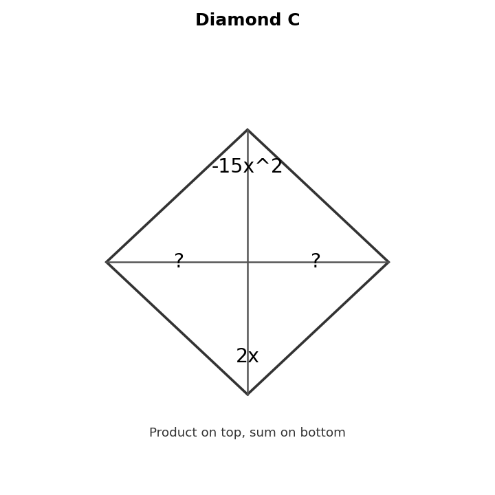
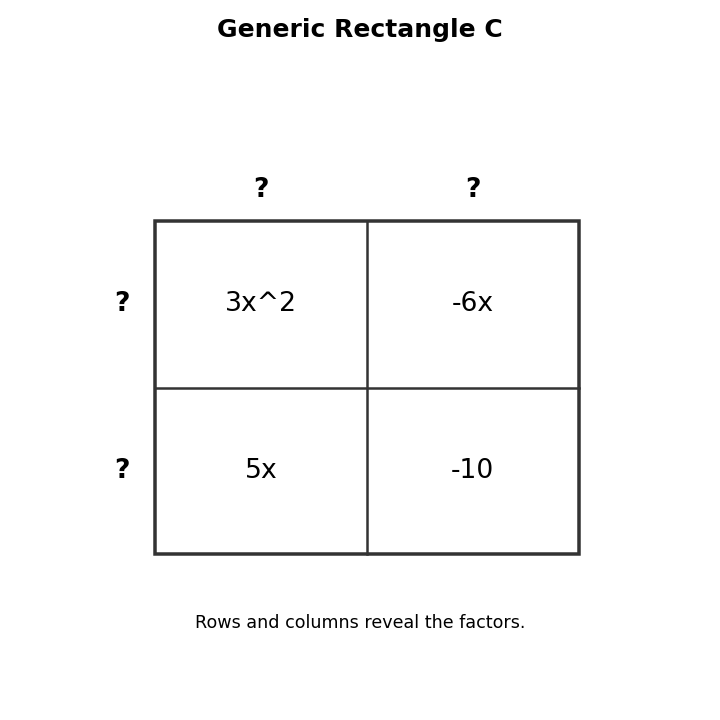

Complete Diamond C. Find two expressions whose product is $-15x^2$ and whose sum is $2x$.

Factor each quadratic, if possible. This is adapted from CPM-style Review/Preview 8-39.
Use Generic Rectangle C. Explain how the row and column dimensions lead to a product form.

Create one factorable trinomial and one trinomial that does not factor over the integers. Explain how product-sum reasoning distinguishes them.
Find the greatest common factor of $24x^2$ and $36x$.
Which expression is fully factored?
Expand $4x(2x-7)$.
Identify the common factor shared by the terms in $21x^2-14x$.
Factor completely.
$$21x^2-14x$$
Factor the GCF first.
$$6x^2+18x+12$$
Explain why factoring out the GCF first can make trinomial factoring easier.
A student factored $12x^2+30x+18$ as $6(2x^2+5x+3)$. Revise the work until the expression is completely factored, if possible.
Multiply.
$$(2x+1)(x+5)$$
Verify whether $(3x+5)(x-2)$ equals $3x^2-x-10$.
Compare the usefulness of $x^2+7x+10$ and $(x+5)(x+2)$ for identifying factors.
Create an area situation whose dimensions multiply to a quadratic trinomial. Write the product and sum forms.